| ! Локальная версия Web сайта от 10 октября ! | Ссылка на действующий web-сайт(www.snowball.ru) |
|---|
Всеслав
Чародей |
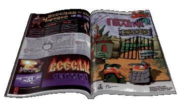 |
| Приближается осень, а
значит и даты выхода в свет большинства крупных
российских игровых проектов. Мы продолжаем
рассказ о глобальной серии игр под названием
«Летопись Времен», начало которой в феврале
этого года положило партнерское соглашение
между компанией «1С» и московской студией Snowball
Interactive. Как вы помните, в прошлом номере Александр Никитин из «1С» рассказывал нам о внутреннем проекте своей компании -- первой российской RPG игре «Князь: Амулет Дракона», выходящей ближе к Новому Году. В этом номере мы обращаемся к первому проекту «Летописи» -- стратегии в реальном времени под официальным названием «Всеслав Чародей: Клан Драгомира», издаваемому «1С» нынешней осенью и разрабатываемому студией Snowball Interactive. Главным программистом проекта является Виталий КЛИМОВ, 3D моделлером и аниматором -- Дима САВИНОВ; дизайнером игры выступает Алексей ЗДОРОВ, моделлером и аниматором пер-сонажей -- Миша КОЛБАСНИКОВ. Продюсер проекта и концепт-дизайнер мира «Летописи» -- Сергей КЛИМОВ, ему помогает creative executive Вадим СОКОЛ. Мы нанесли студии визит в воскресенье, которое в лучших традициях разработчиков компьютерных игр является для Snowball Interactive рабочим днем, и попросили Сергея Климова рассказать нам о ходе работы над «Всеславом»: |
Студия |
| Сергей, что
такое Snowball Interactive? Snowball -- это такая довольно маленькая московская студия, которая занимается исключительно разработкой игр. В начале этого года вышел наш аркадный симулятор PIKE, который вскоре будет переиздан как budget, а в настоящее время мы все свои силы посвящаем «Летописи Времен» -- большой такой игровой серии из четырех проектов, которую мы делаем вместе с компанией «1С». Кстати, они же будут и переиздавать PIKE в рамках новой линии «1С: Коллекция Игрушек». |
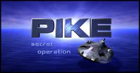
|
| Как
получилось, что вы стали работать вместе с
компанией «1С»? Когда и как вы пришли к этому
решению? В конце прошлого года Макс Белянин в гостях у «Никиты» рассказал нам о планах «1С» по созданию собственной линии игр. Мы в это время раздумывали над идеей хорошей стратегии в реальном времени на древние мотивы, что-нибудь с могучими героями и настоящими мечами, так что где-то под Новый Год мы позвонили в «1С» и встретились с их продюсером, Юрой Мирошниковым. Он с нами поделился идеей сериала, рассчитанного исключительно на российский рынок, а мы с ним -- идеей создания собственной концепции мира, на основе которой этот сериал можно было бы сделать. Потом и у нас, и у него были какие-то неотложные дела, кто-то куда-то улетал, и в следующий раз мы пересеклись уже в феврале. Еще раз собрались все вместе, подумали над идеей, посчитали приблизительный бюджет, и он нас всех устроил, что бывает довольно редко (улыбается). Да и потом идея нас уже сильно зацепила, было очень интересно создать цельную концепцию мира со своим набором правил и своими героями. «1С» был уверен, что Snowball сможет сделать самый лучший проект в рамках заданного срока и бюджета, а мы были уверены, что «1С» -- самый лучший издатель для такой глобальной серии. На том и договорились, а непосредственно за дело мы взялись где-то в начале марта. |
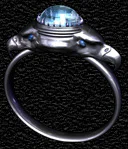 |
| Какие у вас
отношения с «1С»? Насколько они похожи на
привычные отношения разработчика и издателя? |
|
Серия |
Со студией
разобрались, теперь расскажи нам, как появилась
идея «Летописи»? |
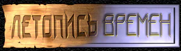 |
| Каковы
основные постулаты мира «Летописи»? Вообще, кто
такие герои и титаны? |
| Какие
проекты уже намечены в рамках серии? |
| А как складываются ваши
отношения с командой из «1С», разрабатывающей
«Князя»? Насколько я понимаю, это первый в
российской практике пример двух независимых
команд, работающих вместе? |
Игра |
| С
драконами и титанами все понятно. Что насчет
самой игры? На какие-нибудь российские проекты
«Всеслав» похож? Нет, не похож. Даже на «Аллодов» мы не похожи -- у нас рельеф из треугольников, а у них -- из прямоугольников (присутствующие программисты посмеиваются). Так и тянет сказать что-нибудь вроде того, что мы станем «первой настоящей, полноценной российской стратегией в реальном времени» (улыбается), однако лучше просто сказать, что «Всеслав» -- первая нормальная игра про Древнюю Русь. XII век, деревянная архитектура, понимаешь, всякие там полуземлянки, усадьбы-замки, сыродутное рудоплавление. Как и все остальные проекты «Летописи», мы ориентируемся исключительно на российский рынок, поэтому и атмосфера у нас в игре особая, древнерусская такая. |
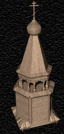 |
| Ну
а как «Всеслав» с другими играми соотносится? |
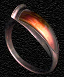 |
| Как
вы сами определяете жанр игры? Эротическая мелодрама с элементами фантастики (смеется). На самом деле «стратегия реальной жизни» будет точнее, чем просто «стратегия в реальном времени». Помимо управления частями в реальном времени у нас еще и соблюдено большинство законов природы. То есть, нормальные пропорции, например. Крестьянин такого размера по отношению к своему дому, что в отличие от Warcraft он спокойно проходит через дверь. И деревья соответствующие. Вообще, все сложено именно так, как в реальном мире. Потом у нас отсутствует такое понятие, как «юнит». Есть есть, например, крестьянин. Староста деревни его берет и в дружину посылает. Там его учат, потом он еще доспехами обзавестись должен, и только после этого мы получаем нормального дружинника. Это вам не кликать на бараках и смотреть, как они за пятнадцать секунд мечника рожают (дизайнеры улыбаются). Нужен лучник в бою -- отправь воина с мечом в оружейную, он там меч положит, щит оставит, возьмет лук и вернется в строй. Есть человек, персонаж, а вот что у него в руках - вопрос десятый. Характеристики остаются прежними -- так что перед тем, как всю игровую жизнь махавший мечом воин начнет круто стрелять из лука, некоторое время сильно мазать будет. |
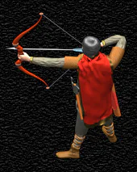 |
А как будет
осуществлено управление персонажами? И как
обстоит дело с «играбельностью»? |
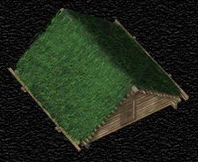 |
| Еще
какие-нибудь глобальные идеи? Да. Последнее время все большее и большее число западных разработчиков начинает понимать, что хороший движок игры -- это не главное, что игра с отличным игровым действием (то, что американцы называют «gameplay») и со средним движком на порядок лучше игры со средним действием и отличным движком. Доказательством тому служит то, что многие из выходящих в последнее время игр с технологически сложными движками их лицензируют, а не пишут свой собственный - Blood, Redneck Rampage, Shadow Warrior (все три используют движок Duke Nukem 3D), Hexen 2, Daikatana (обе на движке Quake). Этот список несомненно будет продолжен. Такой подход к делу позволяет разработчикам не тратить время на изобретение велосипеда, а целиком сосредоточиться на игровом процессе, игровом действии. Так же обстоит дело и с остальными жанрами, в том числе и со стратегиями в реальном времени. И никакой High Color, MMX или поддержка 3D ускорителей не поднимет игру с посредственным содержанием до уровня хита. Кстати, не надо понимать это замечание как оправдание тому, что мы, мол, таким образом хотим протащить собственный хреновый движок (программисты делают возмущенные глаза, порываются вступить в разговор). Такие его особенности, как работа с High Color, полностью трехмерный изменяемый ландшафт и освещение в реальном времени ни по возможностям, ни по скорости никак не позволяют его отнести к разряду «посредственных». |
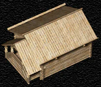 |
| Как
выглядит типичная игровая ситуация в Всеславе? |
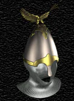 |
| Экономика
какая будет? Многие жалуются, что им этого,
например, в «Противостоянии» не хватало. |
Процесс |
Как процесс
продвигается? |
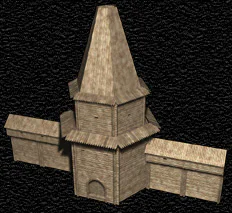 |
| И
как вы в этот единственный день в неделе
развлекаетесь? |
| \ |
Последний
вопрос: когда можно ожидать появления «Всеслава»
в «магазинах нашего города»? |
|
(Москва, сентябрь 1997) |
|
Дизайнеры Snowball Interactive будут несказанно благодарны всем, кто найдет время прислать свои предложения по «Всеславу» и «Меркурию-8». Команда «1С» также ждет ваших предложений по «Князю». |
Text and pictures are (c) 1997 by Snowball Interactive Entertainment, Inc. (c) 1997 by ИЧП "Агарун Компани". All rights reserved. |